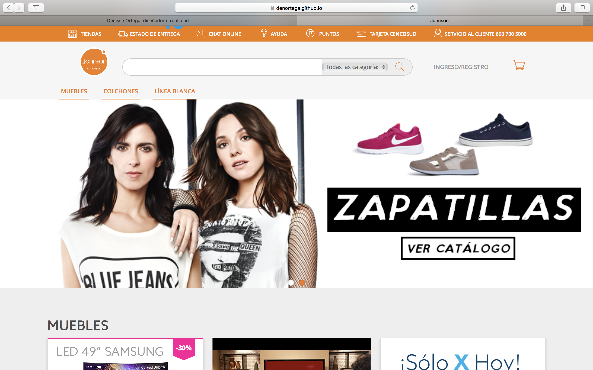

Mis proyectos

SIEDU
Sistema de Indicadores y Estándares del Desarrollo Urbano
#visualización #D3js #front-endConciencia Urbana
Proyecto Explora CONICYT de Valoración y Divulgación de la Ciencia y la Tecnología.
#visualización #front-end #RoRPostdata, Data Science Group
Proyecto de diseño y desarrollo de landing page para Postdata
#diseño #front-end
Mapoteca, Geospatial Technologies
Proyecto de diseño y desarrollo de landing page para Mapoteca
#diseño #front-end
Guemil Project: icons for emergency
Visualización de resultados sobre el desempeño en test de significados
#diseño #visualizacion #D3js

Práctica Cencosud: Johnson e-commerce
Primera versión e-commerce de johnson.cl (2018)
#diseño #front-end #practica